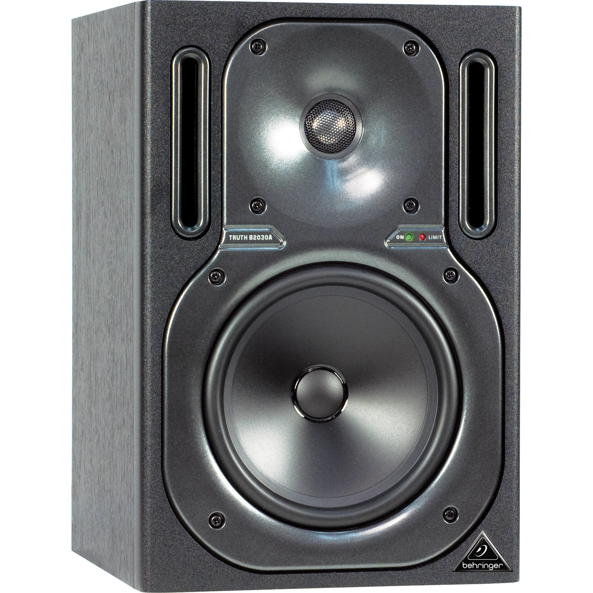

Behringer B2030A repair
Table of Contents

I've been interested in audiophile headphones and IEMs for a while now and have accumulated a modest setup over the years. It started out with a simple "best headphones 2020" google search a couple years back right as Covid was first hitting and I was forced to study remotely. I distinctly remember thinking "well if I'm going to be studying online for a while might as well get some good headphones". At the time the best I had were some variant of the Razer Kraken line up, "Chroma" rings a bell but I'm not exactly sure. I quickly fell down the audiophile rabbit hole and bought a pair of Sennheiser HD600s. A few months later, and I bought a JDS Labs Atom Amp to pair with it. I still use both daily, almost 5 years later1.
I now also own a pair of Denon AH-D5200s which I got for ridiculously cheap from German Amazon2 as my closed backs. The Grado GW100x as my wireless headset. And the Moondrop Aria SE, TRUTHEAR HEXA, and SIMGOT SuperMix 4 as my IEMs. I use a Fiio Bat30 Pro as my DAC, Bluetooth transmitter (for the Grados) and as a Bluetooth receiver. The line out is then fed through a 3.5mm Little Bear MC5 passive mixer (to mix with microphone monitoring) with a ground loop isolator from Aliexpress into my Atom Amp, then into a 4-way RCA switch. It all works quite seamlessly and I love that the only digital thing is my DAC input.
Recently (mid December 2024), a few mates of mine have been getting into HiFi audio, particularly speakers and home theatre setups. One of them showed me his bookshelf setup which he had stolen from his Montior Audio home theatre. He was using the two rears and subwoofer as studio monitors, and quite frankly, I was jealous. We spoke about keeping an eye out on Facebook Marketplace for some good deals on speakers needing repair or a bit of a clean up. This was particularly relevant as he and another mate had recently repaired a Yamaha receiver by replacing a single dead capacitor.
A little over a day later I received a message from him, it was a link to a Marketplace listing for a "pair of Behringer Truth B2030A studio monitors". The price was set at $100 for both, with a short description noting that one worked normally, and one was buzzing. Given that a pair of these 20-year old monitors was still retailing for ~$600 locally, we thought it was a steal. I ended up buying them for $80 the next morning and two mates and I set out on testing and repairing them.
1. The buzzing
While one worked perfectly as described, the other was doing a little more than just "buzzing". On power-on, it popped incredibly loudly, hitting the internal amp's limiter before dying down to a moderate buzz over a few seconds. Occasionally, the buzz would die down to near-inaudible levels (but never entirely) and it would work perfectly. Most of the time, the buzz remained constant and the woofer would make a demonic scream every time something remotely bass-heavy was played. In retrospect, I should have recorded this.
A little bit of research (and I mean a little) led us to believe it could be caused by radio interference from a long wire internally controlling the front status LEDs. We quickly pulled the front plate off and found the small set of 4 wires we believed to be responsible. We unplugged them and powered it back up, only to find there was no boom or buzzing! We thought we'd found a ridiculously easy fix. To verify our solution, we reconnected the LEDs and powered it up, only for the boom and buzzing to return. Feeling quite chuffed, we re-disconnected them, put it all back together, and set out to make some nice cables for them, as I didn't have any long RCA to 6.5mm TRS cables.
If you glance ahead at this recount, you'll notice there's a little more to go. That's because we had just gotten unlucky during our initial testing. We returned with our freshly crafted cables, keen to set up the monitors in my living room. However, upon powering them on, we were immediately greeted with the same, quite obnoxious, boom followed by the buzzing. We decided to call it a day and planned to return two days later to have another crack.
2. Another hypothesis
Instead of trusting the first Reddit post we found, which referenced a 2010 Fixya.com post with a single answer from 2011 about a different model (the B2031A, not our B2030A), we gave it a little more thought.
- The issue persisted with no source. It only needed power to reproduce thus it wasn't a bad source or interference in the cables.
- Similarly it wasn't a ground loop because there was only one ground. Nothing to loop.
A well know problem to the Behringer Truth B2031A speakers is radio interference and noise. I had the same problem with mine and found a solution on a forum!
If you open the speakers, you'll see a cable from the main board that runs to the 2 lights at the front (on/limit LED's). It functions as an antenna… Disconnect it and your speakers are silent, finally. (OK no leds, but I can live with that). — Anonymous
The forum that the anonymous Fixya.com user referenced is lost to us, but it's clear now we neither had the same speakers nor the same issue.
We theorised that the large boom and fade-out could be caused by a capacitor behaving badly. The internet seemed to think that bad capacitors can cause all sorts of odd issues, so it wasn't unreasonable that one was also the culprit here. Additionally, being 20-year-old speakers (the previous owner had kept the original documentation, dated 15 April 2004, 6:30am), it wasn't unreasonable that something had died or was dying internally and was due for replacement. This would also explain the lack of issues when we first tested them, having them unplugged for some period of time may have been enough to discharge the capacitors and avoid the issues, quickly powering it back up after reconnecting the LEDs would have been too fast for them to discharge again.
With no practical way to test the capacitors while still on the board, we chose to focus on the two large capacitors that showed visible signs of wear.
Figure 1: Two main 50v 3300μf capacitors with what appears to be corrosion or old flux leaking out from under them.
3. A new day
Before beginning our second day of attempting to restore these speakers, we stopped off at the closest Altronics store to pick up some replacement capacitors and discharge resistors. This was about a $10 shot in the dark, but we didn't feel like driving 40 minutes just to pick them up from a specialist store when we could get them on the way. And good thing we did - after de-soldering the two large capacitors, it was clear the damage was not just superficial. We're not entirely sure what happened, but there appeared to be significant corrosion which had potentially killed them.
Unfortunately, one pin broke off during removal so we were unable to test the damaged capacitor. The cleaner-looking one failed our resistance test, unable to hold a charge3.

Figure 2: Corroded terminanals where the two main capacitors were previously.

Figure 3: One very corroded capcitor with a missing pin.
A little cleaning and a quick soldering job from a mate with a steadier hand than mine, and we soon had two freshly attached capacitors.

Figure 4: Two freshly soldered capacitors.
4. More rigorous testing
After wiring the pre-amp and input source (my headphone amp and phone), we stood a safe distance back and powered it on. We were greeted by a relieving silence. No boom and buzzing was a fantastic start. We fired up some tracks to test it, the first being "Holly" by Sick Love, a personal favourite of mine, and put the speaker through its paces.
A short clip of "Holly" by Sick Love as the first demo song. Doesn't sound great over the iPhone microphone in a shed with the back of the speaker open but it was working!
Convinced it was working perfectly, we promptly went for a well-deserved swim to cool off, waiting to close the speaker back up until we were no longer sweating profusely.
5. At home
The pair of speakers has been sitting on my desk and serving me very well since. I love them. For approximately $90 in speakers and parts, plus about the same in food, cables, and other miscellaneous items, I think they turned out great.
Footnotes:
Although my HD600s grills have rusted, no idea why, but I can't see it when I'm wearing them so I'm not really bothered.
~$600 AUD including shipping, compared to the ~$1,200 they retail at here.
Turns out, not all multi-meters can measure capacitance, and the ones that can, have an upper limit. Unfortunately ours were out of range, so we settled on measuring the resistance, which tamerson.com says allows us to test if it's dead or not based on how the value changes over time. Unsurprisingly, the capacitor measured no resistance and did not rise, indicating a short.